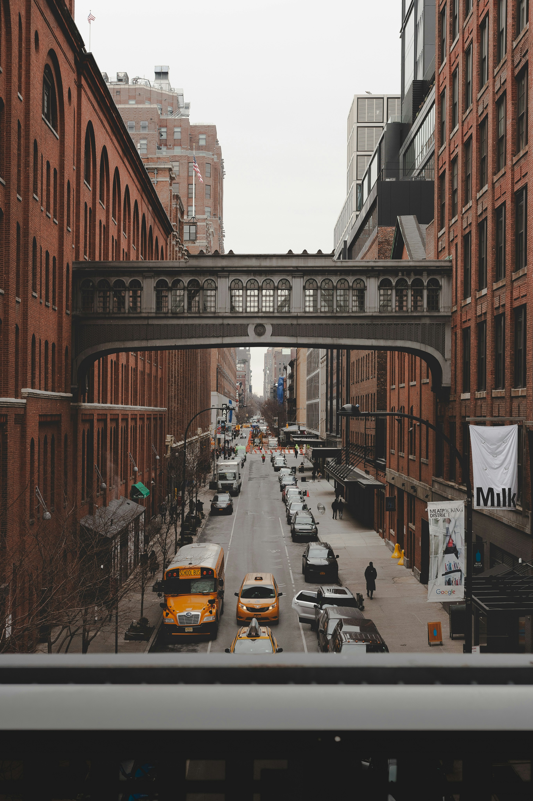

Hoş geldiniz! GeziOM, seyahat tutkunlarının vazgeçilmez rehberi ve keşif partneri olarak karşınızda. Size dünyanın dört bir yanındaki en gizli köşeleri, keşfedilmemiş güzellikleri ve unutulmaz deneyimleri sunuyoruz. Şehirlerin kalbinde, doğal güzelliklerin derinliklerinde ve kültürel hazinelerin arasında yapacağınız yolculuklarda GeziOM, size ilham verecek, yol gösterecek ve seyahatlerinizi daha anlamlı kılacak. Planlamadan keşfe, önerilerden pratik ipuçlarına kadar her şey burada, sizin için hazır. GeziOM ile her adımda yeni bir macera başlatın ve gezmenin keyfini çıkarın!
New York’un simgelerinden biri olan Özgürlük Heykeli, Amerikan bağımsızlığının ve özgürlüğünün sembolüdür. Fransa tarafından ABD’ye hediye edilen bu dev heykel, New York Limanı'ndaki Liberty Adası üzerinde yer alır. Heykelin tepesine çıkarak şehrin ve limanın muazzam manzarasını izleyebilirsiniz. Ayrıca, Ellis Adası’nda bulunan Göçmenlik Müzesi, Amerika’ya göç edenlerin tarihini ve deneyimlerini anlatan etkileyici bir sergi sunar.
New York City, dünya çapında bir metropol olarak bilinir ve her yıl milyonlarca gezgini büyüleyici cazibesiyle kendine çeker. Amerika Birleşik Devletleri’nin en büyük ve en kozmopolit şehirlerinden biri olan New York, dinamik şehir hayatı, ünlü yapıları, kültürel zenginlikleri ve sosyal çeşitliliğiyle dikkat çeker. İşte New York’un keşfedilmesi gereken başlıca yerleri ve yapılacak aktiviteler:
New York’un en ünlü ve kalabalık bölgelerinden biri olan Times Square, reklam panoları, neon ışıkları ve hareketli atmosferi ile bilinir. Burada alışveriş yapabilir, ünlü Broadway tiyatrolarından birine bilet alabilir ve şehir ışıklarının altında dolaşarak gece hayatının tadını çıkarabilirsiniz. Times Square, özellikle akşam saatlerinde ve yılbaşı gecesi görsel olarak büyüleyici bir manzara sunar.
New York'un siluetinin en belirgin yapılarından biri olan Empire State Building, şehrin en yüksek binalarından biridir. 86. katındaki gözlem güvertesinden, Manhattan’ın ve çevredeki bölgelerin panoramik manzarasını izleyebilirsiniz. Gün batımında veya gece ışıklarında yapılan ziyaretler, şehir ışıklarının muazzam görüntüsünü sunar.
New York’un tiyatro dünyasının kalbi Broadway’de yer alır. Broadway, yıl boyunca birçok ünlü müzikali ve tiyatro oyununa ev sahipliği yapar. Chicago, The Lion King ve Hamilton gibi popüler gösteriler, New York seyahatinizde deneyimlemeniz gereken etkinlikler arasında. Önceden bilet alarak, Broadway’in büyüleyici performanslarını izleme fırsatını kaçırmayın.
New York, dinamik ve kozmopolit yapısıyla her gezgine benzersiz bir deneyim sunar. Özgürlük Heykeli'nin özgün havasından, Central Park'ın huzur dolu yeşil alanlarına, Times Square’in ışıltılı kalabalığından, Empire State Building’in muazzam manzarasına kadar, şehirde keşfedilecek birçok yön bulunur. New York’un sunduğu bu çeşitlilik, hem kültürel hem de eğlence dolu bir keşif yapmanızı sağlar. Şehirde geçireceğiniz her an, size unutulmaz anılar ve geniş bir kültürel perspektif kazandıracaktır.